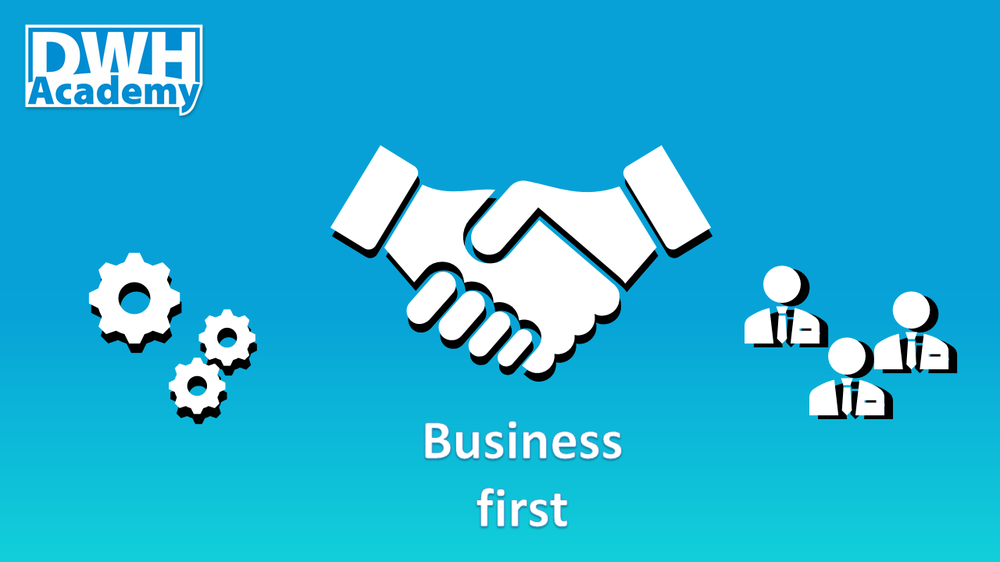

Business Orientation
The real success of a data warehouse is defined by the number of users who use it on a daily basis, so do not forget to always put their needs in the first place.
None of the data warehouse projects would ever exist if there were no business needs, it is hard to imagine an organization that would spend millions of dollars just to make their IT department happy and let them work on the latest and the best available software on the market. I remember that in one of my previous company, even discontinuation of support from the vendor that sold given data warehouse solution was not a strong enough argument for management to replace or build a new data warehouse. It all starts with business needs.

Business goals
Normally the first motivation to start building a data warehouse is the automation of reporting but of course, there are many more, for instance: - increasing data quality, - improving integration, - speeding up response times, - record a history of your data, - create one ‘source of truth’. Undoubtedly there are hundreds of other reason to start building a data warehouse, like supporting strategic decisions, but those above are at the root of most data warehouse projects.
As you might notice all the above examples that I brought up, are referring to business benefits and in fact, there no other benefits than business, because at the end of the day the business unit always secures funding for such projects.
WHAT and HOW
If you read some book about data warehousing, and I believe readers of this blog read at least a few of them, you might find a section about the goals of DWH that seems to be more IT-oriented such are: - the Data Warehouse must present information consistently and accurately, - the Data Warehouse must be adaptive and resilient to change, but all those goals try to answer the question ‘HOW’ to achieve the ultimate (business) goals, rather than ‘WHAT’ to achieve.
To summarize, the success of the Data warehouse depends on the acceptance and the trust of the business community of the Data warehouse data. When the Data warehouse is implemented and you see users that want to use it, not because they were forced to do it, but they find it useful, it proves that you did your job right and you deserved for appreciation from the business community.
comments powered by Disqus